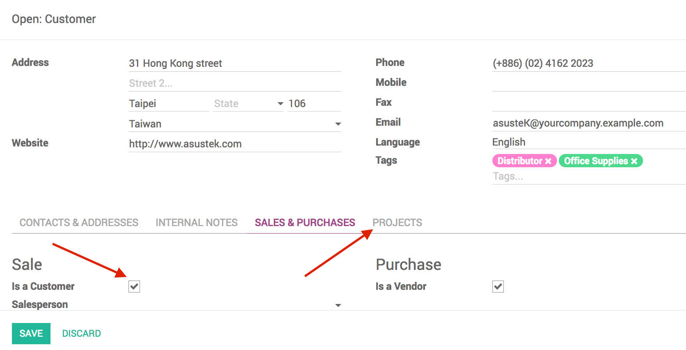

Project Task Identifier
Generate a unique key for your tasks

Project Task Identifier allows you to select an identifier for customers.
This identifier will be used to generate a unique key for all project tasks related to the customer, making it easier to identify tasks.

User guide
How to set up the Project Identifier Key

- Go to a Customer form
- Be sure to check the box Is a customer in the Sales and Purchases tab in order for the Projects tab to appear
- Click on the Projects tab and enter your desired key in the Project Identifier Key field